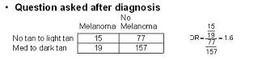
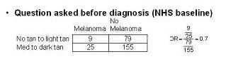
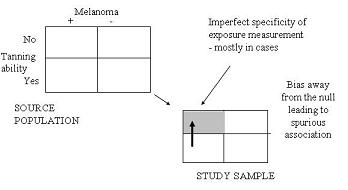

Example of Differential Misclassification Bias - Nurses Health Study
Melanoma Risk
Lead Author(s): Jeff Martin, MD
Differential Misclassification of Exposure Variables
A good verified example of differential misclassification bias can be seen in a Weinstock's nested case control study within the Nurses Health Study that looked at the association between one's self-reported tanning ability and melanoma.
Cases
Here, the cases were women with new melanoma diagnoses and controls were women without melanoma, sampled by incidence density sampling.
- The measurement was a question about tanning ability on a questionnaire that was administered shortly after the melanoma diagnosis.
Results
The 2x2 table below shows what the results of the questionnaire. 
The reference group is women who report medium to dark tanning ability.
- Compared to this reference group, women with no tan to light tan had an odds ratio of 1.6, i.e. an elevated odds.
Is there any reason to be suspicious about this?
Well, it is conceivable that when questioned after the diagnosis of melanoma, some participants may have exaggerated their lack of tanning ability especially if they were concerned that sun exposure was a reason they got melanoma.
Comparison with Cohort Study Data
Because this was a cohort study, the investigators had the ability to look at responses to the tanning ability question was answered at the baseline of the study - long before the melanoma diagnosis.
- Of course, tanning ability should not change over time.
In the 2x2 table below we see the results of the questionnaire before diagnosis.

When they looked at the question answered at the Nurses Health Study baseline, they found no evidence of an association between tanning ability and melanoma.
Schematic of Differential Misclassification
What apparently occurred is shown schematically below.

If we consider the responses given at baseline to be the gold standard (and these responses were, of course, given prior to any occurrence of melanoma and hence they are most believable),
- then what we have in this example is a problem in the specificity in the tanning ability measurement.
- This was mostly, if not solely, in the cases who are most likely over exaggerating of their inability to tan and thus leading to a spurious association.
This is an example of DIFFERENTIAL misclassification of exposure, and the bias is away from the null.
References
Weinstock, M. A., Colditz, G. A., Willett, W. C., Stampfer, M. J., Rosner, B., & Speizer, F. E. (1991). Recall (report) bias and reliability in the retrospective assessment of melanoma risk. Am J Epidemiol, 133 (3), 240-245.